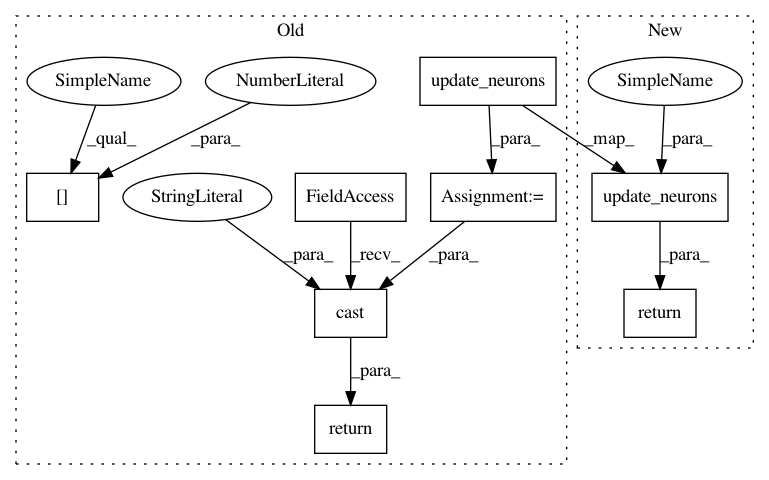

1be7c5996fa959572854044d3cc580a2abc6bfa7,snntoolbox/core/inisim.py,SpikeMaxPooling2D,call,#SpikeMaxPooling2D#Any#Any#,559
Before Change
def call(self, x, mask=None):
Layer functionality.
inp = x[0]
if settings["payloads"]:
// Add payload from previous layer
inp = add_payloads(self.inbound_nodes[0].inbound_layers[0], inp)
if "binary" in settings["maxpool_type"]:
self.impulse = super(SpikeMaxPooling2D, self).call(inp)
elif settings["maxpool_type"] in ["avg_max", "fir_max", "exp_max"]:
spikerate = self.inbound_nodes[0].inbound_layers[0].spikerate \
if self.inbound_nodes[0].inbound_layers \
else k.placeholder(shape=self.input_shape) // Test if needed.
max_idx = pool_same_size(spikerate, self.pool_size,
self.ignore_border, self.strides)
self.impulse = super(SpikeMaxPooling2D, self).call(t.mul(inp,
max_idx))
else:
print("Wrong max pooling type, "
"falling back on Average Pooling instead.")
self.impulse = k.pool2d(inp, self.pool_size, self.strides,
self.border_mode, pool_mode="avg")
output_spikes = update_neurons(self, x)
return t.cast(output_spikes, "float32")
@property
def class_name(self):
Get class name.
After Change
self.impulse = k.pool2d(inp, self.pool_size, self.strides,
self.border_mode, pool_mode="avg")
return update_neurons(self, x)
def reset(self):
Reset layer variables.
In pattern: SUPERPATTERN
Frequency: 4
Non-data size: 8
Instances
Project Name: NeuromorphicProcessorProject/snn_toolbox
Commit Name: 1be7c5996fa959572854044d3cc580a2abc6bfa7
Time: 2016-11-25
Author: bodo.rueckauer@gmail.com
File Name: snntoolbox/core/inisim.py
Class Name: SpikeMaxPooling2D
Method Name: call
Project Name: NeuromorphicProcessorProject/snn_toolbox
Commit Name: 1be7c5996fa959572854044d3cc580a2abc6bfa7
Time: 2016-11-25
Author: bodo.rueckauer@gmail.com
File Name: snntoolbox/core/inisim.py
Class Name: SpikeDense
Method Name: call
Project Name: NeuromorphicProcessorProject/snn_toolbox
Commit Name: 1be7c5996fa959572854044d3cc580a2abc6bfa7
Time: 2016-11-25
Author: bodo.rueckauer@gmail.com
File Name: snntoolbox/core/inisim.py
Class Name: SpikeAveragePooling2D
Method Name: call
Project Name: NeuromorphicProcessorProject/snn_toolbox
Commit Name: 1be7c5996fa959572854044d3cc580a2abc6bfa7
Time: 2016-11-25
Author: bodo.rueckauer@gmail.com
File Name: snntoolbox/core/inisim.py
Class Name: SpikeConvolution2D
Method Name: call